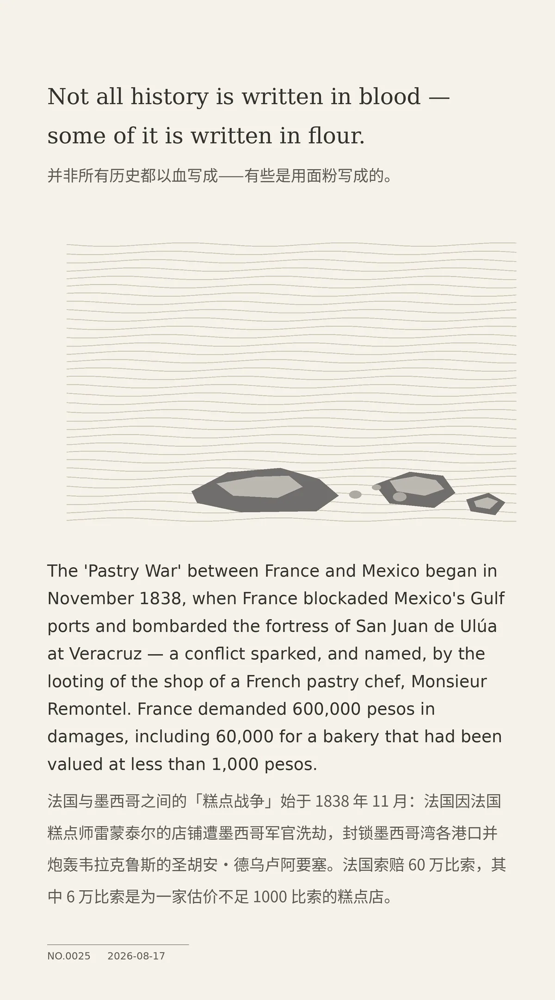

Not all history is written in blood — some of it is written in flour.（并非所有历史都以血写成——有些是用面粉写成的。）
The 'Pastry War' between France and Mexico began in November 1838, when France blockaded Mexico's Gulf ports and bombarded the fortress of San Juan de Ulúa at Veracruz — a conflict sparked, and named, by the looting of the shop of a French pastry chef, Monsieur Remontel. France demanded 600,000 pesos in damages, including 60,000 for a bakery that had been valued at less than 1,000 pesos.（法国与墨西哥之间的「糕点战争」始于 1838 年 11 月：法国因法国糕点师雷蒙泰尔的店铺遭墨西哥军官洗劫，封锁墨西哥湾各港口并炮轰韦拉克鲁斯的圣胡安·德乌卢阿要塞。法国索赔 60 万比索，其中 6 万比索是为一家估价不足 1000 比索的糕点店。）